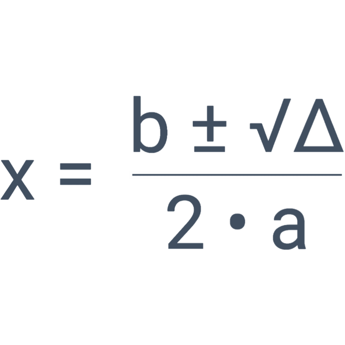

O que é Bhaskara?
Bhaskara, é uma fórmula usada para calcular a raíz de equações de 2° Grau.
Ela possuí esse nome em homenagem ao matemático indiano "Bhaskara Akaria".
Mas, está famosa e temida fórmula não é chamada assim em todos os países, portanto a mesma pode ser chama de "fórmula da quadrática" ou "fórmula de resolução de equações do 2º Grau".
Como funciona?
A fórmula de Bhaskara possui esta forma:
Sendo: a, b, e c, contantes tiradas da equação de 2º Grau, com base na fórmula geral, Δ (delta) o descriminante, e x a icognita a ser calculada.
A fórmula de Bhakara pode resultar em 1, 2, ou nenhum resultado, de acordo com o descriminante:
- Δ < 0, Quando o delta for negativo, significa que a raiz da equação não existe.
- Δ = 0, Quando o delta for igual a zero, significa que so existe uma raiz da equação, ou mesmo, duas raizes iguais.
- Δ > 0, Quando o delta for maior do que zero, significa que so existem 2 raizes da equação.
Após calcular o descriminante, você deve calcular o resto da fórmula que é uma tarefa relativamente fácil.
Uma coisa que pode gerar duvidas é o "operador" ± que pode der entendido erroneamente como uma aproximação, quando na verdade, signifíca que os mesmos calculos devem ser feitos duas veses, com adição, e subtração no lugar do ±.
Para mais informações, você pode acessar os links abaixo: